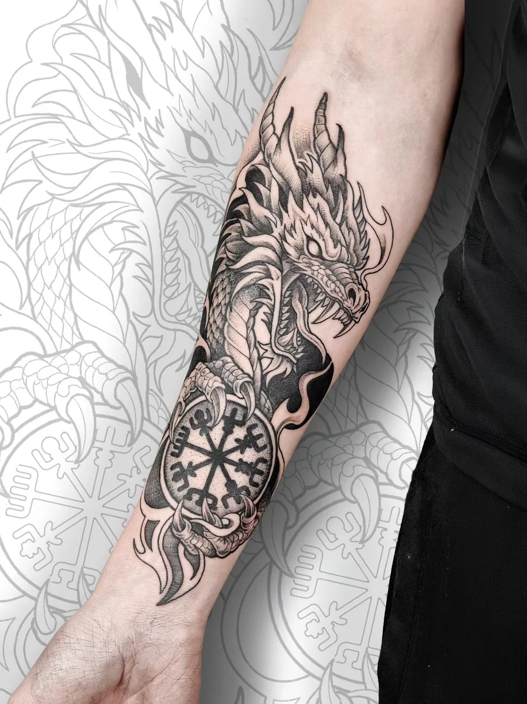
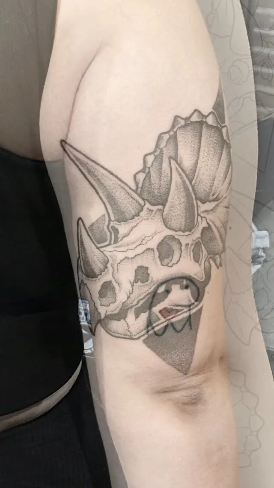
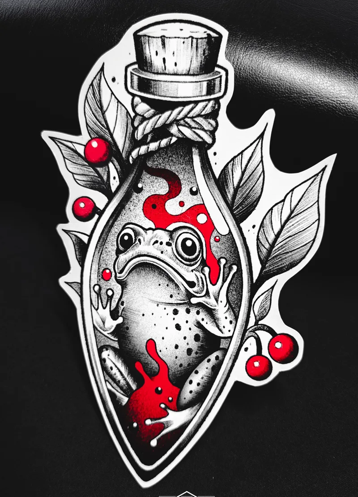
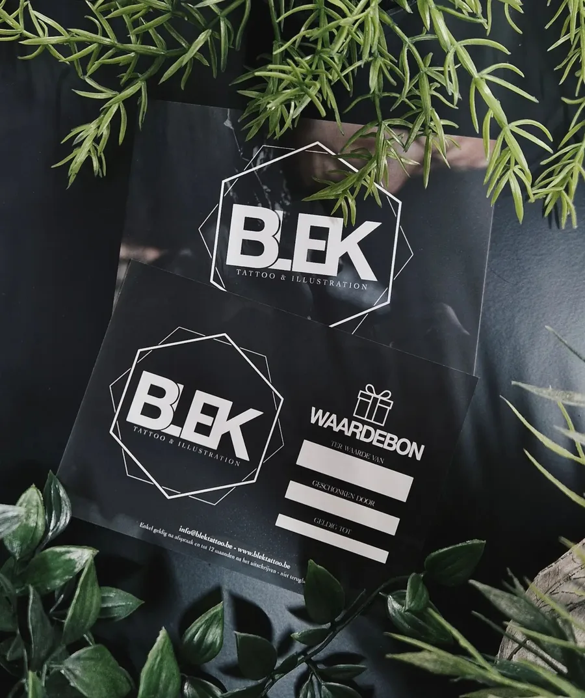

★★★★★
"Ik was onmiddellijk gerustgesteld door de kalme en professionele uitstraling van Sven, duidelijke en transparante communicatie vooraf, hygiënisch salon, het ontwerp, ruimte voor vragen nadien. Kortom: een aanrader!"
Stefanie WillemsGoogle
Illustratieve en graphic tattoos, getekend voor jou. Bij BLEK werk ik alleen en op afspraak, zodat alle aandacht naar jouw tattoo gaat.

Elk stuk begint als tekening. Op Instagram zie je dat altijd terug: de tattoo vooraan, mijn lijntekening erachter. Een eigen stijl, geen ontwerp uit een map.



Stuur een berichtje met wat je in gedachten hebt, de plaats en de grootte.
Ik werk je idee uit tot een persoonlijk ontwerp, met duidelijke info vooraf.
Rustig, hygiënisch en met tijd voor vragen. Nazorg krijg je mee.

Cover-upEen tattoo waar je niet meer blij mee bent, hoeft niet te blijven. Voor een cover-up teken ik een ontwerp dat zoveel mogelijk vormen van de oude tattoo meeneemt.
Zoals deze triceratops: op maat getekend over een tattoo die er eerder stond.
"De truc van een goede cover-up: het oog wegtrekken van de oude tattoo."Sven, vrij vertaald uit zijn Instagram
Flash designs zijn kant-en-klare ontwerpen die ik heel graag zou tatoeëren. Ze worden maar één keer gezet, dus je bent zeker van een unieke tattoo. En met een kleine korting.




Iets gezien? Stuur een DM voor de minimum grootte, de prijs en de plaatsing.
Meer flash op InstagramBLEK is het resultaat van een jarenlange droom en passie voor tattoos en illustraties. Een gezellige, hygiënische privéstudio in Asse, waar ik individueel en enkel op afspraak werk.
Eén klant tegelijk. De aandacht gaat 100% naar jouw tattoo.
"Ik was onmiddellijk gerustgesteld door de kalme en professionele uitstraling van Sven, duidelijke en transparante communicatie vooraf, hygiënisch salon, het ontwerp, ruimte voor vragen nadien. Kortom: een aanrader!"
Stefanie WillemsGoogle"De studio zelf is netjes en je merkt dat hij echt zijn tijd neemt om tot een geweldig resultaat te komen."
Sylke OomsGoogle"Op basis van ideeën heeft Sven een persoonlijk ontwerp voor mij uitgewerkt. Professionele aanpak, stelt je op uw gemak, staat klaar voor advies en after care! Super content van het resultaat."
Hanne Van OpdenboschGoogleEen idee, een flash of een cover-up? Stuur een berichtje via WhatsApp of mail en we bekijken het samen.
Prieelstraat 49
1730 Asse
Enkel op afspraak

Ik maakte deze demo voor jullie om te tonen wat er kan. Na een kort gesprek maak ik er iets veel persoonlijkers van, helemaal naar jullie wens.
Vrijblijvend. Ik kom langs of we bellen.
Op maat, op jullie eigen domein.
Geen voorschot. Jullie betalen pas als alles klaar is.
Hosting, domeinnaam en kleine wijzigingen, zoals nieuwe openingsuren.
Omdat een voorbeeld meer zegt dan een mail. Zo zien jullie meteen wat er kan, en het kost jullie niets.
Nee. Het gesprek is vrijblijvend. Vinden jullie het niks, dan is het daarmee gedaan.
Na ons gesprek staat jullie site binnen 10 tot 14 dagen online.
Zeker. Jullie domeinnaam kan gewoon blijven, de nieuwe site komt in de plaats van de oude.
Nee, dat doe ik op basis van ons gesprek. Eigen foto's zijn mooi meegenomen, maar niet nodig om te starten.